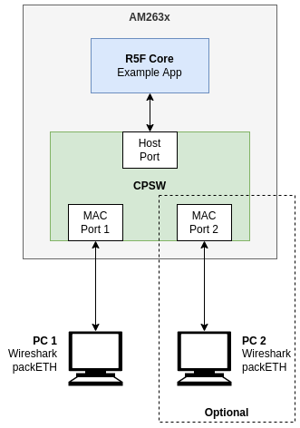
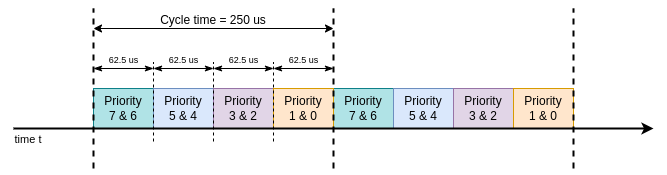

Introduction
This example application illustrates the configuration and usage of 802.1Qbv Enhanced Scheduled Traffic (EST) with CPSW through Enet LLD. The example application enables MAC port 1 by default, but it supports up to two MAC ports available in CPSW3G on SoC.

CPSW EST example on device
The example application opens one DMA TX channel and one DMA RX channel. The TX channel will be used to inject test packets into CPSW host port. The RX channel receives packets and just drops them as this example doesn't focus on RX data path.
The application will also open the MAC port and will wait until the port gets link up with a remote partner (i.e. PC). The application then configures the same default EST schedule on the enabled MAC port.
The application uses Enet Time Aware Shaper API for EST configuration and Enet Data Path (DMA) API for packet transmission.
It's worth noting that this example application does not integrate time synchronization. This is relevant when both MAC ports are enabled and an external device (i.e. PC) is used to verify if the transmitted packets are meeting the programmed EST schedule (cycle time and time intervals), as CPSW CPTS internal clock might be off with respect to the external device's clock.
Configuration Parameters
Typically, the application's parameters that a developer may want to change are:
- Number of MAC ports. By default the example application enables only MAC port 1, but the user can choose to enable MAC port 2 as well by setting
testParams.macPortNum = 1 in enet_cpsw_est_main.c. Some users may prefer to enable both MAC ports due to the flexibility to easily inject different kinds of test packets from the external ports, as opposed to just from the internal host port.
- MAC port number. When a single port is enabled, user can select the port number to test via
testParams.portTestParams[0].macPort in enet_cpsw_est_main.c.
- EST schedule. User can set different EST schedule by setting a new cycle time in
testParams.portTestParams[0].tasControlList.cycleTime and/or new gate control list in testParams.portTestParams[n].tasControlList.gateCmdList and testParams.portTestParams[n].tasControlList.listLength. Note that the EST schedule can be different for each MAC port.
- CPTS event pool size. User can increase the pool size to 32 or larger via
ENET_CFG_CPSW_CPTS_EVENTS_POOL_SIZE in enet_cfg.h if interested on verifying all timestamps generated for all TX test packets.
Application Functionality
EST Schedule
The EST schedule programmed by this example application is shown below:

Default EST schedule in CPSW EST example application
This EST schedule is 250 usecs long and is composed of 4 intervals, each with a gate mask that enables transmission of 2 priorities. There is no interval stretching or truncation in this sample schedule.
EST schedule parameters
| Parameter | Time Value |
| BaseTime | Current time + ENET_APP_EST_ADMIN_LIST_DELAY |
| CycleTime | 250 usecs |
Gate control list
| Gate Control | Time Interval |
ooCCCCCC | 62.5 usecs |
CCooCCCC | 62.5 usecs |
CCCCooCC | 62.5 usecs |
CCCCCCoo | 62.5 usecs |
Each of the 8 gates (one per priority) can be in one of two states:
- Open: Frames in the corresponding queue can be selected for transmission. This is represented by '
o' in the Gate Control column of previous table.
- Closed: Frames in the corresponding queue are not selected for transmission. This is represented by '
C' in the Gate Control column.
The priority being referred to in the EST schedule described above corresponds to the CPSW destination port hardware switch priority. For VLAN tagged packets that ingress through CPSW host port, the hardware switch priority can be determined by either the CPPI channel number (P0_RX_REMAP_VLAN = 0) or the packet priority value from the VLAN tag (P0_RX_REMAP_VLAN = 1).
For the sake of simplicity, this example configures CPSW to assign the switch priority from the VLAN tag priority in order to use a single TX channel. The relevant configuration parameters are shown in the code snippet below:
hostPortCfg->rxVlanRemapEn = true;
hostPortCfg->rxDscpIPv4RemapEn = true;
hostPortCfg->rxDscpIPv6RemapEn = true;
The IOCTLs used to program the EST schedule are:
Additionally, the following getter IOCTLs are called for informational reasons:
Transmit Test
The example application provides an option to send ENETAPP_TEST_TX_PKT_CNT (16) test packets through the single TX channel opened by the driver at initialization time.
Each test frame is a broadcast packet, 64 bytes long, VLAN tagged with VLAN Id 100 and PCP values from 0 through 7. The test packet content is shown below:
Dst addr : ff:ff:ff:ff:ff:ff
Src addr : 70:ff:76:1d:ec:f2
TPID : 0x8100
Priority : 0
VLAN Id : 100
EtherType: 0x88b5
Payload : 0x00 0x00 0x00 0x00 0x00 0x00 0x00 0x00 0x00 0x00 0x00 0x00 0x00 0x00 0x00 ...
Dst addr : ff:ff:ff:ff:ff:ff
Src addr : 70:ff:76:1d:ec:f2
TPID : 0x8100
Priority : 1
VLAN Id : 100
EtherType: 0x88b5
Payload : 0x01 0x01 0x01 0x01 0x01 0x01 0x01 0x01 0x01 0x01 0x01 0x01 0x01 0x01 0x01 ...
Dst addr : ff:ff:ff:ff:ff:ff
Src addr : 70:ff:76:1d:ec:f2
TPID : 0x8100
Priority : 2
VLAN Id : 100
EtherType: 0x88b5
Payload : 0x02 0x02 0x02 0x02 0x02 0x02 0x02 0x02 0x02 0x02 0x02 0x02 0x02 0x02 0x02 ...
Dst addr : ff:ff:ff:ff:ff:ff
Src addr : 70:ff:76:1d:ec:f2
TPID : 0x8100
Priority : 3
VLAN Id : 100
EtherType: 0x88b5
Payload : 0x03 0x03 0x03 0x03 0x03 0x03 0x03 0x03 0x03 0x03 0x03 0x03 0x03 0x03 0x03 ...
Dst addr : ff:ff:ff:ff:ff:ff
Src addr : 70:ff:76:1d:ec:f2
TPID : 0x8100
Priority : 4
VLAN Id : 100
EtherType: 0x88b5
Payload : 0x04 0x04 0x04 0x04 0x04 0x04 0x04 0x04 0x04 0x04 0x04 0x04 0x04 0x04 0x04 ...
Dst addr : ff:ff:ff:ff:ff:ff
Src addr : 70:ff:76:1d:ec:f2
TPID : 0x8100
Priority : 5
VLAN Id : 100
EtherType: 0x88b5
Payload : 0x05 0x05 0x05 0x05 0x05 0x05 0x05 0x05 0x05 0x05 0x05 0x05 0x05 0x05 0x05 ...
Dst addr : ff:ff:ff:ff:ff:ff
Src addr : 70:ff:76:1d:ec:f2
TPID : 0x8100
Priority : 6
VLAN Id : 100
EtherType: 0x88b5
Payload : 0x06 0x06 0x06 0x06 0x06 0x06 0x06 0x06 0x06 0x06 0x06 0x06 0x06 0x06 0x06 ...
Dst addr : ff:ff:ff:ff:ff:ff
Src addr : 70:ff:76:1d:ec:f2
TPID : 0x8100
Priority : 7
VLAN Id : 100
EtherType: 0x88b5
Payload : 0x07 0x07 0x07 0x07 0x07 0x07 0x07 0x07 0x07 0x07 0x07 0x07 0x07 0x07 0x07 ...
Dst addr : ff:ff:ff:ff:ff:ff
Src addr : 70:ff:76:1d:ec:f2
TPID : 0x8100
Priority : 0
VLAN Id : 100
EtherType: 0x88b5
Payload : 0x08 0x08 0x08 0x08 0x08 0x08 0x08 0x08 0x08 0x08 0x08 0x08 0x08 0x08 0x08 ...
Dst addr : ff:ff:ff:ff:ff:ff
Src addr : 70:ff:76:1d:ec:f2
TPID : 0x8100
Priority : 1
VLAN Id : 100
EtherType: 0x88b5
Payload : 0x09 0x09 0x09 0x09 0x09 0x09 0x09 0x09 0x09 0x09 0x09 0x09 0x09 0x09 0x09 ...
Dst addr : ff:ff:ff:ff:ff:ff
Src addr : 70:ff:76:1d:ec:f2
TPID : 0x8100
Priority : 2
VLAN Id : 100
EtherType: 0x88b5
Payload : 0x0a 0x0a 0x0a 0x0a 0x0a 0x0a 0x0a 0x0a 0x0a 0x0a 0x0a 0x0a 0x0a 0x0a 0x0a ...
Dst addr : ff:ff:ff:ff:ff:ff
Src addr : 70:ff:76:1d:ec:f2
TPID : 0x8100
Priority : 3
VLAN Id : 100
EtherType: 0x88b5
Payload : 0x0b 0x0b 0x0b 0x0b 0x0b 0x0b 0x0b 0x0b 0x0b 0x0b 0x0b 0x0b 0x0b 0x0b 0x0b ...
Dst addr : ff:ff:ff:ff:ff:ff
Src addr : 70:ff:76:1d:ec:f2
TPID : 0x8100
Priority : 4
VLAN Id : 100
EtherType: 0x88b5
Payload : 0x0c 0x0c 0x0c 0x0c 0x0c 0x0c 0x0c 0x0c 0x0c 0x0c 0x0c 0x0c 0x0c 0x0c 0x0c ...
Dst addr : ff:ff:ff:ff:ff:ff
Src addr : 70:ff:76:1d:ec:f2
TPID : 0x8100
Priority : 5
VLAN Id : 100
EtherType: 0x88b5
Payload : 0x0d 0x0d 0x0d 0x0d 0x0d 0x0d 0x0d 0x0d 0x0d 0x0d 0x0d 0x0d 0x0d 0x0d 0x0d ...
Dst addr : ff:ff:ff:ff:ff:ff
Src addr : 70:ff:76:1d:ec:f2
TPID : 0x8100
Priority : 6
VLAN Id : 100
EtherType: 0x88b5
Payload : 0x0e 0x0e 0x0e 0x0e 0x0e 0x0e 0x0e 0x0e 0x0e 0x0e 0x0e 0x0e 0x0e 0x0e 0x0e ...
Dst addr : ff:ff:ff:ff:ff:ff
Src addr : 70:ff:76:1d:ec:f2
TPID : 0x8100
Priority : 7
VLAN Id : 100
EtherType: 0x88b5
Payload : 0x0f 0x0f 0x0f 0x0f 0x0f 0x0f 0x0f 0x0f 0x0f 0x0f 0x0f 0x0f 0x0f 0x0f 0x0f ...
Packets are transmitted using regular Enet LLD's EnetDma_submitTxPktQ() API.
EST Packet Timestamping
The example application configures the EST administrative base time to be equal to the current time + ENET_APP_EST_ADMIN_LIST_DELAY (100 msecs). This is useful to normalize the timestamps of the transmitted packets and verify that they are being sent on the appropriate time intervals.
When enabled via serial console menu (option 't'), CPSW ESTF will be configured to generate timestamps on every express packet. Each timestamp generates a CPTS interrupt which the Enet LLD driver services, the driver copies the timestamp event information into a software pool where the application can then retrieve. This CPTS event pool is shared among all MAC ports.
The timestamp option in this example application works together with option 'T' which sents a short stream of test packets. At the end of the transmission, the application will retrieve the available timestamps and verify if they met the programmed EST schedule.
The pool size determines the maximum number of events that the driver can store until the application retrieves them. The default pool size is 8, but it's configurable via ENET_CFG_CPSW_CPTS_EVENTS_POOL_SIZE in enet_cfg.h.
The relevant IOCTLs used by this application for EST timestamping are:
Other Test Options
Additional test options are provided if the user wants to exercise the EST functionality beyond the basic usage described in earlier sections. The user can enter 'h' at any time in the application's menu to display the test options.
EST State Control
The following options are provided by the application to change the EST state on all enabled MAC ports:
- Set EST state to ENABLE.
- Set EST state to DISABLE.
- Set EST state to RESET.
Additional EST Schedules
In additional the default EST schedule, the example application also provides 9 different test schedules which the user can optionally try.
- Administrative list with last time interval stretched to the end of the cycle.
- Administrative list truncated due to cycle time shorter that total interval time.
- Administrative list with guard band.
- Administrative list with single priority enabled. Only packets with priority 7 will be transmitted.
- Administrative list with base time in the future. This is not supported when EST is in ENABLE state, but it's supported when EST is in DISABLE or RESET states.
- Administrative list with different cycle time. This is not supported when EST is in ENABLE state, but it's supported when EST is in DISABLE or RESET states.
- Administrative list with time interval too small. Driver shall reject this EST schedule.
- Administrative list with cycle time of zero. This is an invalid configuration and shall be rejected by the driver.
- Administrative list with a zero interval followed by non-zero intervals. This is an invalid configuration and shall be rejected by the driver.
Miscellaneous Options
The following helper options are also provided in the application's test menu:
- Get current time.
- Print network statistics.
- Reset (clear) network statistics.
- Stop the test.
Application Flow
The most important steps related to the EST configuration performed by the application are shown in the following sequence diagram:
Supported Combinations
| Parameter | Value |
| CPU + OS | r5fss0-0_freertos |
| Toolchain | ti-arm-clang |
| Boards | am64x-evm |
| Example folder | examples/networking/enet_cpsw_est/V1 |
Steps to Run the Example
Build the example
- When using CCS projects to build, import the CCS project for the required combination and build it using the CCS project menu (see Using SDK with CCS Projects).
- When using makefiles to build, note the required combination and build using make command (see Using SDK with Makefiles)
HW Setup
Make sure you have setup the EVM with cable connections as shown in EVM Setup. In addition, follow the steps in the next section.
- Note
- Ethernet cable must be connected and link must be up in order for the example application to continue execution.
AM263X-CC
- If using MAC port 1 (default), connect an Ethernet cable to the RJ-45 jack labeled as
J7.
- If using MAC port 2, connect an Ethernet cable to the RJ-45 jack labeled as
J4.
AM263X-LP
- If using MAC port 1 (default), connect an Ethernet cable to the RJ-45 jack labeled as
J7.
- If using MAC port 2, connect an Ethernet cable to the RJ-45 jack labeled as
J8.
Run the example
Basic Test
The simplest test that one can run with the CPSW EST example consists of:
- Enabling EST and programming a default EST schedule on the selected MAC port.
- Sending test packets from example app with different priorities.
- Verify that packets are transmitted within the time intervals corresponding to the packet priority.
The steps to run this test are:
- Connect the MAC port as described in HW Setup section.
- Optional: If using PC connected to the EVM port, open Wireshark in order to check the packets sent by the example application. Note that the timestamps in Wireshark are not necessarily accurate (see Wireshark documentation).
- Launch a CCS debug session and run the example executable, see CCS Launch, Load and Run.
- Application logs such as cycle time, time intervals and gate masks will be printed in the serial console. Sample logs are shown in the next section.
- Enable EST timestamping by entering '
t' on the serial console.
- Run TX test by entering '
T' on the serial console. Test status will be printed in the serial console.
- Note
- Timestamp check mechanism used to determined test status is enabled only with the default EST schedule. The timestamp check will be disabled automatically when EST is disabled (option
D or R is entered, or when link is lost).
Sample output
==========================
CPSW EST Test
==========================
Open MAC port 1
EnetPhy_bindDriver: PHY 0: OUI:080028 Model:0f Ver:01 <-> 'dp83869' : OK
Host MAC address: 70:ff:76:1d:ec:f2
Port 1: Waiting for link up...
Cpsw_handleLinkUp: Port 1: Link up: 1-Gbps Full-Duplex
MAC Port 1: link up
Port 1: Link is up
MAC Port 1: suggested start time: 5012930968
MAC 1: Admin List
-------------------------------------------
Gate mask=ooCCCCCC (0xc0), start=0 ns, end=62499 ns, dur=62500 ns
Gate mask=CCooCCCC (0x30), start=62500 ns, end=124999 ns, dur=62500 ns
Gate mask=CCCCooCC (0x0c), start=125000 ns, end=187499 ns, dur=62500 ns
Gate mask=CCCCCCoo (0x03), start=187500 ns, end=249999 ns, dur=62500 ns
Cycle time=250000 ns
Base time=5012930968 ns
MAC 1: Oper List
-------------------------------------------
Gate mask=ooCCCCCC (0xc0), start=0 ns, end=62503 ns, dur=62504 ns
Gate mask=CCooCCCC (0x30), start=62504 ns, end=125007 ns, dur=62504 ns
Gate mask=CCCCooCC (0x0c), start=125008 ns, end=187511 ns, dur=62504 ns
Gate mask=CCCCCCoo (0x03), start=187512 ns, end=250015 ns, dur=62504 ns
Cycle time=250000 ns
Base time=5012930968 ns
MAC addr: 70:ff:76:1d:ec:f2
CPSW EST Test Menu:
EST control list tests:
'T' - Send test packets from host port
'1' - Set admin list #1 (stretch)
'2' - Set admin list #2 (truncate)
'3' - Set admin list #3 (guard band)
'4' - Set admin list #4 (single priority)
'5' - Set admin list #5 (admin basetime in future)
'6' - Set admin list #6 (unsupported list - new cycle time)
'7' - Set admin list #7 (unsupported list - too small interval)
'8' - Set admin list #8 (invalid list - zero length)
'9' - Set admin list #9 (invalid list - zero interval)
EST state:
'E' - Set EST state to 'ENABLE'
'D' - Set EST state to 'DISABLE'
'R' - Set EST state to 'RESET'
Others:
'c' - Get current time
't' - Toggle printing timestamps
's' - Print statistics
'r' - Reset statistics
'x' - Stop the test
'h' - Show this menu
t
Enable timestamp printing
T
MAC 1: EST timestamp verification
-------------------------------------------
Programmed EST time intervals:
Gate mask=ooCCCCCC (0xc0), start=0 ns, end=62503 ns
Gate mask=CCooCCCC (0x30), start=62504 ns, end=125007 ns
Gate mask=CCCCooCC (0x0c), start=125008 ns, end=187511 ns
Gate mask=CCCCCCoo (0x03), start=187512 ns, end=250000 ns
Retrieved EST timestamps:
Note: last 8 timestamps per port are stored with current CPTS pool size (8)
MAC Port 1: packet with priority 3 timestamp 9359306373 (norm 125405) interval (125008, 187511) : PASS
MAC Port 1: packet with priority 3 timestamp 9359307073 (norm 126105) interval (125008, 187511) : PASS
MAC Port 1: packet with priority 2 timestamp 9359307778 (norm 126810) interval (125008, 187511) : PASS
MAC Port 1: packet with priority 2 timestamp 9359308483 (norm 127515) interval (125008, 187511) : PASS
MAC Port 1: packet with priority 1 timestamp 9359368873 (norm 187905) interval (187512, 250000) : PASS
MAC Port 1: packet with priority 1 timestamp 9359369578 (norm 188610) interval (187512, 250000) : PASS
MAC Port 1: packet with priority 0 timestamp 9359370283 (norm 189315) interval (187512, 250000) : PASS
MAC Port 1: packet with priority 0 timestamp 9359370988 (norm 190020) interval (187512, 250000) : PASS
Note: Although all packets are timestamped by CPTS, some timestamps will be overwritten in driver's event pool depending on the pool size. The timestamps that are printed in the serial terminal will vary as the packet transmission via option 'T' happens asynchronously of the EST cycle.
See Also
Ethernet And Networking
 1.8.20
1.8.20